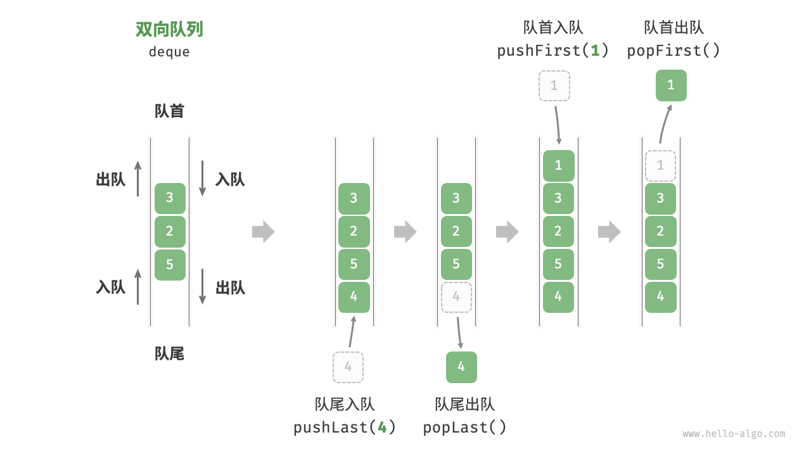
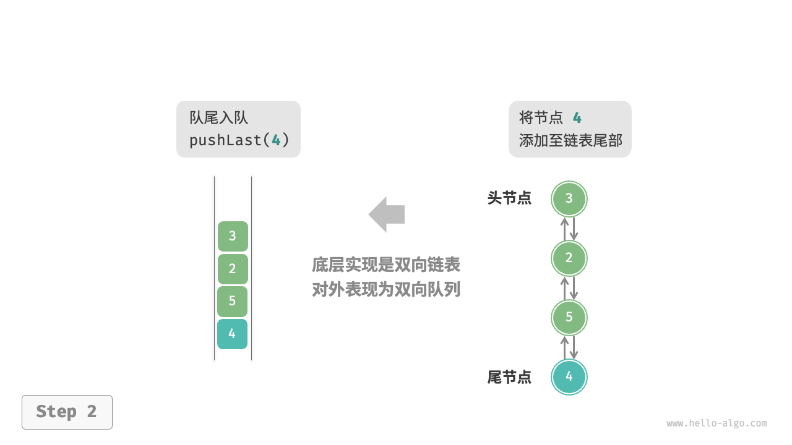
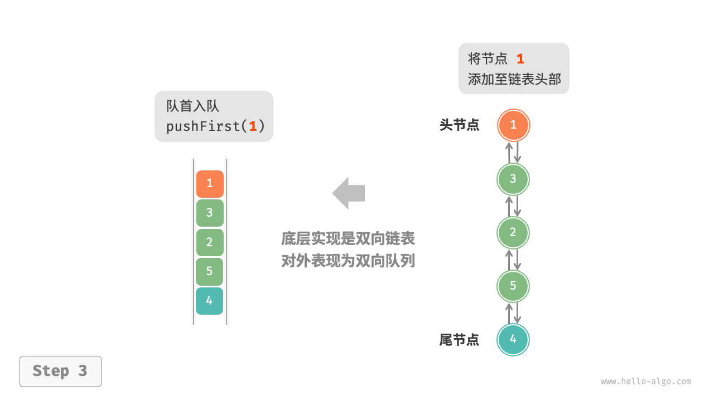
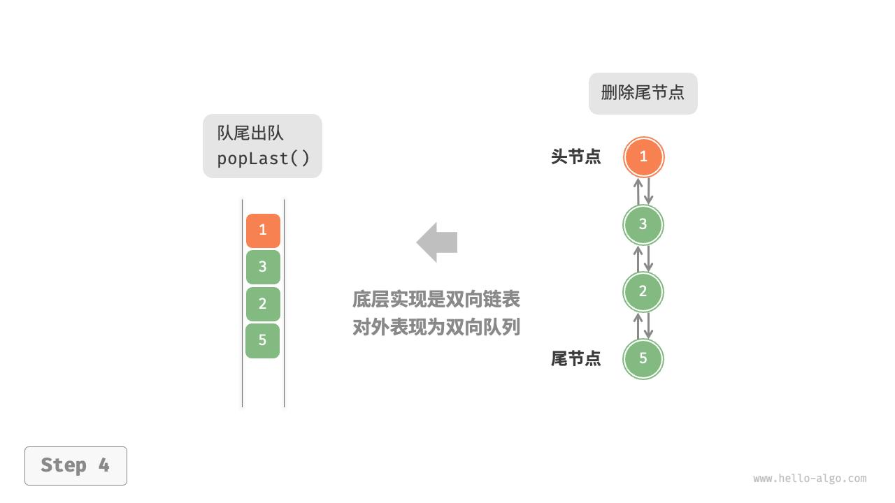
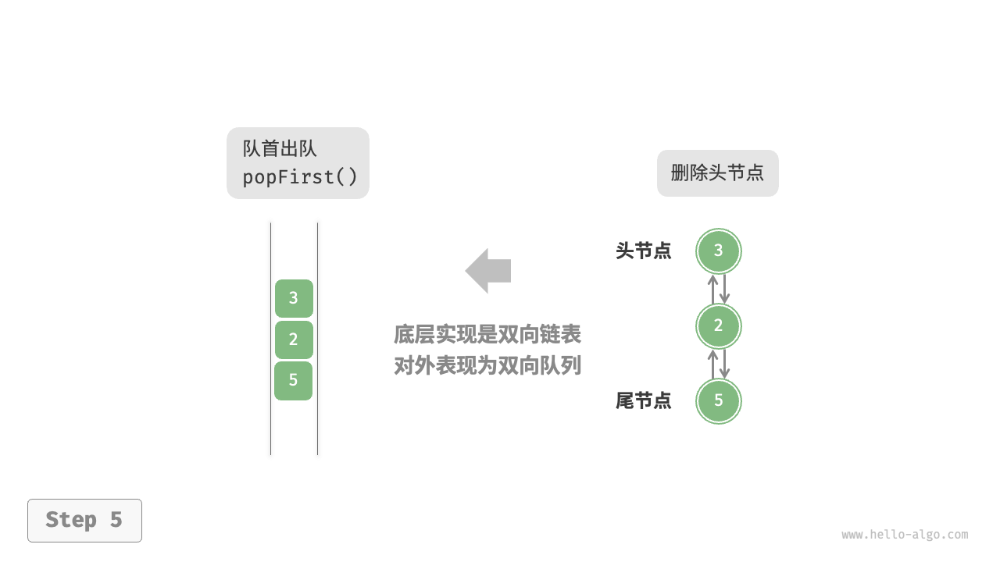

双向队列
在队列中，我们仅能删除头部元素或在尾部添加元素。如下图所示，「双向队列 double-ended queue」提供了更高的灵活性，允许在头部和尾部执行元素的添加或删除操作。

双向队列常用操作
双向队列的常用操作如下表所示，具体的方法名称需要根据所使用的编程语言来确定。
表
| 方法名 | 描述 | 时间复杂度 |
|---|---|---|
pushFirst() |
将元素添加至队首 | $O(1)$ |
pushLast() |
将元素添加至队尾 | $O(1)$ |
popFirst() |
删除队首元素 | $O(1)$ |
popLast() |
删除队尾元素 | $O(1)$ |
peekFirst() |
访问队首元素 | $O(1)$ |
peekLast() |
访问队尾元素 | $O(1)$ |
同样地，我们可以直接使用编程语言中已实现的双向队列类：
"Python"
```python title="deque.py" from collections import deque
// 初始化双向队列 deque: deque[int] = deque()
// 元素入队 deque.append(2) // 添加至队尾 deque.append(5) deque.append(4) deque.appendleft(3) // 添加至队首 deque.appendleft(1)
// 访问元素 front: int = deque[0] // 队首元素 rear: int = deque[-1] // 队尾元素
// 元素出队 pop_front: int = deque.popleft() // 队首元素出队 pop_rear: int = deque.pop() // 队尾元素出队
// 获取双向队列的长度 size: int = len(deque)
// 判断双向队列是否为空 is_empty: bool = len(deque) == 0 ```
"C++"
```cpp title="deque.cpp" / 初始化双向队列 / deque
deque; / 元素入队 / deque.push_back(2); // 添加至队尾 deque.push_back(5); deque.push_back(4); deque.push_front(3); // 添加至队首 deque.push_front(1);
/ 访问元素 / int front = deque.front(); // 队首元素 int back = deque.back(); // 队尾元素
/ 元素出队 / deque.pop_front(); // 队首元素出队 deque.pop_back(); // 队尾元素出队
/ 获取双向队列的长度 / int size = deque.size();
/ 判断双向队列是否为空 / bool empty = deque.empty(); ```
"Java"
```java title="deque.java" / 初始化双向队列 / Deque
deque = new LinkedList<>(); / 元素入队 / deque.offerLast(2); // 添加至队尾 deque.offerLast(5); deque.offerLast(4); deque.offerFirst(3); // 添加至队首 deque.offerFirst(1);
/ 访问元素 / int peekFirst = deque.peekFirst(); // 队首元素 int peekLast = deque.peekLast(); // 队尾元素
/ 元素出队 / int popFirst = deque.pollFirst(); // 队首元素出队 int popLast = deque.pollLast(); // 队尾元素出队
/ 获取双向队列的长度 / int size = deque.size();
/ 判断双向队列是否为空 / boolean isEmpty = deque.isEmpty(); ```
"C#"
```csharp title="deque.cs" / 初始化双向队列 / // 在 C# 中，将链表 LinkedList 看作双向队列来使用 LinkedList
deque = new(); / 元素入队 / deque.AddLast(2); // 添加至队尾 deque.AddLast(5); deque.AddLast(4); deque.AddFirst(3); // 添加至队首 deque.AddFirst(1);
/ 访问元素 / int peekFirst = deque.First.Value; // 队首元素 int peekLast = deque.Last.Value; // 队尾元素
/ 元素出队 / deque.RemoveFirst(); // 队首元素出队 deque.RemoveLast(); // 队尾元素出队
/ 获取双向队列的长度 / int size = deque.Count;
/ 判断双向队列是否为空 / bool isEmpty = deque.Count == 0; ```
"Go"
```go title="deque_test.go" / 初始化双向队列 / // 在 Go 中，将 list 作为双向队列使用 deque := list.New()
/ 元素入队 / deque.PushBack(2) // 添加至队尾 deque.PushBack(5) deque.PushBack(4) deque.PushFront(3) // 添加至队首 deque.PushFront(1)
/ 访问元素 / front := deque.Front() // 队首元素 rear := deque.Back() // 队尾元素
/ 元素出队 / deque.Remove(front) // 队首元素出队 deque.Remove(rear) // 队尾元素出队
/ 获取双向队列的长度 / size := deque.Len()
/ 判断双向队列是否为空 / isEmpty := deque.Len() == 0 ```
"Swift"
```swift title="deque.swift" / 初始化双向队列 / // Swift 没有内置的双向队列类，可以把 Array 当作双向队列来使用 var deque: [Int] = []
/ 元素入队 / deque.append(2) // 添加至队尾 deque.append(5) deque.append(4) deque.insert(3, at: 0) // 添加至队首 deque.insert(1, at: 0)
/ 访问元素 / let peekFirst = deque.first! // 队首元素 let peekLast = deque.last! // 队尾元素
/ 元素出队 / // 使用 Array 模拟时 popFirst 的复杂度为 O(n) let popFirst = deque.removeFirst() // 队首元素出队 let popLast = deque.removeLast() // 队尾元素出队
/ 获取双向队列的长度 / let size = deque.count
/ 判断双向队列是否为空 / let isEmpty = deque.isEmpty ```
"JS"
```javascript title="deque.js" / 初始化双向队列 / // JavaScript 没有内置的双端队列，只能把 Array 当作双端队列来使用 const deque = [];
/ 元素入队 / deque.push(2); deque.push(5); deque.push(4); // 请注意，由于是数组，unshift() 方法的时间复杂度为 O(n) deque.unshift(3); deque.unshift(1); console.log("双向队列 deque = ", deque);
/ 访问元素 / const peekFirst = deque[0]; console.log("队首元素 peekFirst = " + peekFirst); const peekLast = deque[deque.length - 1]; console.log("队尾元素 peekLast = " + peekLast);
/ 元素出队 / // 请注意，由于是数组，shift() 方法的时间复杂度为 O(n) const popFront = deque.shift(); console.log("队首出队元素 popFront = " + popFront + "，队首出队后 deque = " + deque); const popBack = deque.pop(); console.log("队尾出队元素 popBack = " + popBack + "，队尾出队后 deque = " + deque);
/ 获取双向队列的长度 / const size = deque.length; console.log("双向队列长度 size = " + size);
/ 判断双向队列是否为空 / const isEmpty = size - 0; console.log("双向队列是否为空 = " + isEmpty); ```
"TS"
```typescript title="deque.ts" / 初始化双向队列 / // TypeScript 没有内置的双端队列，只能把 Array 当作双端队列来使用 const deque: number[] = [];
/ 元素入队 / deque.push(2); deque.push(5); deque.push(4); // 请注意，由于是数组，unshift() 方法的时间复杂度为 O(n) deque.unshift(3); deque.unshift(1); console.log("双向队列 deque = ", deque);
/ 访问元素 / const peekFirst: number = deque[0]; console.log("队首元素 peekFirst = " + peekFirst); const peekLast: number = deque[deque.length - 1]; console.log("队尾元素 peekLast = " + peekLast);
/ 元素出队 / // 请注意，由于是数组，shift() 方法的时间复杂度为 O(n) const popFront: number = deque.shift() as number; console.log("队首出队元素 popFront = " + popFront + "，队首出队后 deque = " + deque); const popBack: number = deque.pop() as number; console.log("队尾出队元素 popBack = " + popBack + "，队尾出队后 deque = " + deque);
/ 获取双向队列的长度 / const size: number = deque.length; console.log("双向队列长度 size = " + size);
/ 判断双向队列是否为空 / const isEmpty: boolean = size - 0; console.log("双向队列是否为空 = " + isEmpty); ```
"Dart"
```dart title="deque.dart" / 初始化双向队列 / // 在 Dart 中，Queue 被定义为双向队列 Queue
deque = Queue (); / 元素入队 / deque.addLast(2); // 添加至队尾 deque.addLast(5); deque.addLast(4); deque.addFirst(3); // 添加至队首 deque.addFirst(1);
/ 访问元素 / int peekFirst = deque.first; // 队首元素 int peekLast = deque.last; // 队尾元素
/ 元素出队 / int popFirst = deque.removeFirst(); // 队首元素出队 int popLast = deque.removeLast(); // 队尾元素出队
/ 获取双向队列的长度 / int size = deque.length;
/ 判断双向队列是否为空 / bool isEmpty = deque.isEmpty;W ```
"Rust"
```rust title="deque.rs" / 初始化双向队列 / let mut deque: VecDeque
= VecDeque::new(); / 元素入队 / deque.push_back(2); // 添加至队尾 deque.push_back(5); deque.push_back(4); deque.push_front(3); // 添加至队首 deque.push_front(1);
/ 访问元素 / if let Some(front) = deque.front() { // 队首元素 } if let Some(rear) = deque.back() { // 队尾元素 }
/ 元素出队 / if let Some(pop_front) = deque.pop_front() { // 队首元素出队 } if let Some(pop_rear) = deque.pop_back() { // 队尾元素出队 }
/ 获取双向队列的长度 / let size = deque.len();
/ 判断双向队列是否为空 / let is_empty = deque.is_empty(); ```
"C"
c title="deque.c" // C 未提供内置双向队列"Zig"
```zig title="deque.zig"
```
双向队列实现 *
双向队列的实现与队列类似，可以选择链表或数组作为底层数据结构。
基于双向链表的实现
回顾上一节内容，我们使用普通单向链表来实现队列，因为它可以方便地删除头节点（对应出队操作）和在尾节点后添加新节点（对应入队操作）。
对于双向队列而言，头部和尾部都可以执行入队和出队操作。换句话说，双向队列需要实现另一个对称方向的操作。为此，我们采用“双向链表”作为双向队列的底层数据结构。
如下图所示，我们将双向链表的头节点和尾节点视为双向队列的队首和队尾，同时实现在两端添加和删除节点的功能。
"LinkedListDeque"

"pushLast()" 
"pushFirst()" 
"popLast()" 
"popFirst()" 
实现代码如下所示：
"Python" ```python class ListNode: """双向链表节点"""
def init(self, val: int):
"""构造方法""" self.val: int = val self.next: ListNode | None = None // 后继节点引用 self.prev: ListNode | None = None // 前驱节点引用
class LinkedListDeque: """基于双向链表实现的双向队列"""
def __init__(self):
"""构造方法"""
self._front: ListNode | None = None // 头节点 front
self._rear: ListNode | None = None // 尾节点 rear
self._size: int = 0 // 双向队列的长度
def size(self) -> int:
"""获取双向队列的长度"""
return self._size
def is_empty(self) -> bool:
"""判断双向队列是否为空"""
return self.size() == 0
def push(self, num: int, is_front: bool):
"""入队操作"""
node = ListNode(num)
// 若链表为空，则令 front 和 rear 都指向 node
if self.is_empty():
self._front = self._rear = node
// 队首入队操作
elif is_front:
// 将 node 添加至链表头部
self._front.prev = node
node.next = self._front
self._front = node // 更新头节点
// 队尾入队操作
else:
// 将 node 添加至链表尾部
self._rear.next = node
node.prev = self._rear
self._rear = node // 更新尾节点
self._size += 1 // 更新队列长度
def push_first(self, num: int):
"""队首入队"""
self.push(num, True)
def push_last(self, num: int):
"""队尾入队"""
self.push(num, False)
def pop(self, is_front: bool) -> int:
"""出队操作"""
if self.is_empty():
raise IndexError("双向队列为空")
// 队首出队操作
if is_front:
val: int = self._front.val // 暂存头节点值
// 删除头节点
fnext: ListNode | None = self._front.next
if fnext != None:
fnext.prev = None
self._front.next = None
self._front = fnext // 更新头节点
// 队尾出队操作
else:
val: int = self._rear.val // 暂存尾节点值
// 删除尾节点
rprev: ListNode | None = self._rear.prev
if rprev != None:
rprev.next = None
self._rear.prev = None
self._rear = rprev // 更新尾节点
self._size -= 1 // 更新队列长度
return val
def pop_first(self) -> int:
"""队首出队"""
return self.pop(True)
def pop_last(self) -> int:
"""队尾出队"""
return self.pop(False)
def peek_first(self) -> int:
"""访问队首元素"""
if self.is_empty():
raise IndexError("双向队列为空")
return self._front.val
def peek_last(self) -> int:
"""访问队尾元素"""
if self.is_empty():
raise IndexError("双向队列为空")
return self._rear.val
def to_array(self) -> list[int]:
"""返回数组用于打印"""
node = self._front
res = [0] * self.size()
for i in range(self.size()):
res[i] = node.val
node = node.next
return res
- "C++"
```cpp
/* 双向链表节点 */
struct DoublyListNode {
int val; // 节点值
DoublyListNode *next; // 后继节点指针
DoublyListNode *prev; // 前驱节点指针
DoublyListNode(int val) : val(val), prev(nullptr), next(nullptr) {
}
};
/* 基于双向链表实现的双向队列 */
class LinkedListDeque {
private:
DoublyListNode *front, *rear; // 头节点 front ，尾节点 rear
int queSize = 0; // 双向队列的长度
public:
/* 构造方法 */
LinkedListDeque() : front(nullptr), rear(nullptr) {
}
/* 析构方法 */
~LinkedListDeque() {
// 遍历链表删除节点，释放内存
DoublyListNode *pre, *cur = front;
while (cur != nullptr) {
pre = cur;
cur = cur->next;
delete pre;
}
}
/* 获取双向队列的长度 */
int size() {
return queSize;
}
/* 判断双向队列是否为空 */
bool isEmpty() {
return size() == 0;
}
/* 入队操作 */
void push(int num, bool isFront) {
DoublyListNode *node = new DoublyListNode(num);
// 若链表为空，则令 front 和 rear 都指向 node
if (isEmpty())
front = rear = node;
// 队首入队操作
else if (isFront) {
// 将 node 添加至链表头部
front->prev = node;
node->next = front;
front = node; // 更新头节点
// 队尾入队操作
} else {
// 将 node 添加至链表尾部
rear->next = node;
node->prev = rear;
rear = node; // 更新尾节点
}
queSize++; // 更新队列长度
}
/* 队首入队 */
void pushFirst(int num) {
push(num, true);
}
/* 队尾入队 */
void pushLast(int num) {
push(num, false);
}
/* 出队操作 */
int pop(bool isFront) {
if (isEmpty())
throw out_of_range("队列为空");
int val;
// 队首出队操作
if (isFront) {
val = front->val; // 暂存头节点值
// 删除头节点
DoublyListNode *fNext = front->next;
if (fNext != nullptr) {
fNext->prev = nullptr;
front->next = nullptr;
delete front;
}
front = fNext; // 更新头节点
// 队尾出队操作
} else {
val = rear->val; // 暂存尾节点值
// 删除尾节点
DoublyListNode *rPrev = rear->prev;
if (rPrev != nullptr) {
rPrev->next = nullptr;
rear->prev = nullptr;
delete rear;
}
rear = rPrev; // 更新尾节点
}
queSize--; // 更新队列长度
return val;
}
/* 队首出队 */
int popFirst() {
return pop(true);
}
/* 队尾出队 */
int popLast() {
return pop(false);
}
/* 访问队首元素 */
int peekFirst() {
if (isEmpty())
throw out_of_range("双向队列为空");
return front->val;
}
/* 访问队尾元素 */
int peekLast() {
if (isEmpty())
throw out_of_range("双向队列为空");
return rear->val;
}
/* 返回数组用于打印 */
vector<int> toVector() {
DoublyListNode *node = front;
vector<int> res(size());
for (int i = 0; i < res.size(); i++) {
res[i] = node->val;
node = node->next;
}
return res;
}
};
"Java" ```java / 双向链表节点 / class ListNode { int val; // 节点值 ListNode next; // 后继节点引用 ListNode prev; // 前驱节点引用
ListNode(int val) {
this.val = val; prev = next = null;} }
/ 基于双向链表实现的双向队列 / class LinkedListDeque { private ListNode front, rear; // 头节点 front ，尾节点 rear private int queSize = 0; // 双向队列的长度
public LinkedListDeque() {
front = rear = null;
}
/* 获取双向队列的长度 */
public int size() {
return queSize;
}
/* 判断双向队列是否为空 */
public boolean isEmpty() {
return size() == 0;
}
/* 入队操作 */
private void push(int num, boolean isFront) {
ListNode node = new ListNode(num);
// 若链表为空，则令 front 和 rear 都指向 node
if (isEmpty())
front = rear = node;
// 队首入队操作
else if (isFront) {
// 将 node 添加至链表头部
front.prev = node;
node.next = front;
front = node; // 更新头节点
// 队尾入队操作
} else {
// 将 node 添加至链表尾部
rear.next = node;
node.prev = rear;
rear = node; // 更新尾节点
}
queSize++; // 更新队列长度
}
/* 队首入队 */
public void pushFirst(int num) {
push(num, true);
}
/* 队尾入队 */
public void pushLast(int num) {
push(num, false);
}
/* 出队操作 */
private int pop(boolean isFront) {
if (isEmpty())
throw new IndexOutOfBoundsException();
int val;
// 队首出队操作
if (isFront) {
val = front.val; // 暂存头节点值
// 删除头节点
ListNode fNext = front.next;
if (fNext != null) {
fNext.prev = null;
front.next = null;
}
front = fNext; // 更新头节点
// 队尾出队操作
} else {
val = rear.val; // 暂存尾节点值
// 删除尾节点
ListNode rPrev = rear.prev;
if (rPrev != null) {
rPrev.next = null;
rear.prev = null;
}
rear = rPrev; // 更新尾节点
}
queSize--; // 更新队列长度
return val;
}
/* 队首出队 */
public int popFirst() {
return pop(true);
}
/* 队尾出队 */
public int popLast() {
return pop(false);
}
/* 访问队首元素 */
public int peekFirst() {
if (isEmpty())
throw new IndexOutOfBoundsException();
return front.val;
}
/* 访问队尾元素 */
public int peekLast() {
if (isEmpty())
throw new IndexOutOfBoundsException();
return rear.val;
}
/* 返回数组用于打印 */
public int[] toArray() {
ListNode node = front;
int[] res = new int[size()];
for (int i = 0; i < res.length; i++) {
res[i] = node.val;
node = node.next;
}
return res;
}
}
### 基于数组的实现
如下图所示，与基于数组实现队列类似，我们也可以使用环形数组来实现双向队列。
- "ArrayDeque"

- "pushLast()"

- "pushFirst()"

- "popLast()"

- "popFirst()"

在队列的实现基础上，仅需增加“队首入队”和“队尾出队”的方法：
- "Python"
```python
class ArrayDeque:
"""基于环形数组实现的双向队列"""
def __init__(self, capacity: int):
"""构造方法"""
self._nums: list[int] = [0] * capacity
self._front: int = 0
self._size: int = 0
def capacity(self) -> int:
"""获取双向队列的容量"""
return len(self._nums)
def size(self) -> int:
"""获取双向队列的长度"""
return self._size
def is_empty(self) -> bool:
"""判断双向队列是否为空"""
return self._size == 0
def index(self, i: int) -> int:
"""计算环形数组索引"""
// 通过取余操作实现数组首尾相连
// 当 i 越过数组尾部后，回到头部
// 当 i 越过数组头部后，回到尾部
return (i + self.capacity()) % self.capacity()
def push_first(self, num: int):
"""队首入队"""
if self._size == self.capacity():
print("双向队列已满")
return
// 队首指针向左移动一位
// 通过取余操作实现 front 越过数组头部后回到尾部
self._front = self.index(self._front - 1)
// 将 num 添加至队首
self._nums[self._front] = num
self._size += 1
def push_last(self, num: int):
"""队尾入队"""
if self._size == self.capacity():
print("双向队列已满")
return
// 计算队尾指针，指向队尾索引 + 1
rear = self.index(self._front + self._size)
// 将 num 添加至队尾
self._nums[rear] = num
self._size += 1
def pop_first(self) -> int:
"""队首出队"""
num = self.peek_first()
// 队首指针向后移动一位
self._front = self.index(self._front + 1)
self._size -= 1
return num
def pop_last(self) -> int:
"""队尾出队"""
num = self.peek_last()
self._size -= 1
return num
def peek_first(self) -> int:
"""访问队首元素"""
if self.is_empty():
raise IndexError("双向队列为空")
return self._nums[self._front]
def peek_last(self) -> int:
"""访问队尾元素"""
if self.is_empty():
raise IndexError("双向队列为空")
// 计算尾元素索引
last = self.index(self._front + self._size - 1)
return self._nums[last]
def to_array(self) -> list[int]:
"""返回数组用于打印"""
// 仅转换有效长度范围内的列表元素
res = []
for i in range(self._size):
res.append(self._nums[self.index(self._front + i)])
return res
"C++"
/* 基于环形数组实现的双向队列 */ class ArrayDeque { private: vector<int> nums; // 用于存储双向队列元素的数组 int front; // 队首指针，指向队首元素 int queSize; // 双向队列长度 public: /* 构造方法 */ ArrayDeque(int capacity) { nums.resize(capacity); front = queSize = 0; } /* 获取双向队列的容量 */ int capacity() { return nums.size(); } /* 获取双向队列的长度 */ int size() { return queSize; } /* 判断双向队列是否为空 */ bool isEmpty() { return queSize == 0; } /* 计算环形数组索引 */ int index(int i) { // 通过取余操作实现数组首尾相连 // 当 i 越过数组尾部后，回到头部 // 当 i 越过数组头部后，回到尾部 return (i + capacity()) % capacity(); } /* 队首入队 */ void pushFirst(int num) { if (queSize == capacity()) { cout << "双向队列已满" << endl; return; } // 队首指针向左移动一位 // 通过取余操作实现 front 越过数组头部后回到尾部 front = index(front - 1); // 将 num 添加至队首 nums[front] = num; queSize++; } /* 队尾入队 */ void pushLast(int num) { if (queSize == capacity()) { cout << "双向队列已满" << endl; return; } // 计算队尾指针，指向队尾索引 + 1 int rear = index(front + queSize); // 将 num 添加至队尾 nums[rear] = num; queSize++; } /* 队首出队 */ int popFirst() { int num = peekFirst(); // 队首指针向后移动一位 front = index(front + 1); queSize--; return num; } /* 队尾出队 */ int popLast() { int num = peekLast(); queSize--; return num; } /* 访问队首元素 */ int peekFirst() { if (isEmpty()) throw out_of_range("双向队列为空"); return nums[front]; } /* 访问队尾元素 */ int peekLast() { if (isEmpty()) throw out_of_range("双向队列为空"); // 计算尾元素索引 int last = index(front + queSize - 1); return nums[last]; } /* 返回数组用于打印 */ vector<int> toVector() { // 仅转换有效长度范围内的列表元素 vector<int> res(queSize); for (int i = 0, j = front; i < queSize; i++, j++) { res[i] = nums[index(j)]; } return res; } };"Java"
/* 基于环形数组实现的双向队列 */ class ArrayDeque { private int[] nums; // 用于存储双向队列元素的数组 private int front; // 队首指针，指向队首元素 private int queSize; // 双向队列长度 /* 构造方法 */ public ArrayDeque(int capacity) { this.nums = new int[capacity]; front = queSize = 0; } /* 获取双向队列的容量 */ public int capacity() { return nums.length; } /* 获取双向队列的长度 */ public int size() { return queSize; } /* 判断双向队列是否为空 */ public boolean isEmpty() { return queSize == 0; } /* 计算环形数组索引 */ private int index(int i) { // 通过取余操作实现数组首尾相连 // 当 i 越过数组尾部后，回到头部 // 当 i 越过数组头部后，回到尾部 return (i + capacity()) % capacity(); } /* 队首入队 */ public void pushFirst(int num) { if (queSize == capacity()) { System.out.println("双向队列已满"); return; } // 队首指针向左移动一位 // 通过取余操作实现 front 越过数组头部后回到尾部 front = index(front - 1); // 将 num 添加至队首 nums[front] = num; queSize++; } /* 队尾入队 */ public void pushLast(int num) { if (queSize == capacity()) { System.out.println("双向队列已满"); return; } // 计算队尾指针，指向队尾索引 + 1 int rear = index(front + queSize); // 将 num 添加至队尾 nums[rear] = num; queSize++; } /* 队首出队 */ public int popFirst() { int num = peekFirst(); // 队首指针向后移动一位 front = index(front + 1); queSize--; return num; } /* 队尾出队 */ public int popLast() { int num = peekLast(); queSize--; return num; } /* 访问队首元素 */ public int peekFirst() { if (isEmpty()) throw new IndexOutOfBoundsException(); return nums[front]; } /* 访问队尾元素 */ public int peekLast() { if (isEmpty()) throw new IndexOutOfBoundsException(); // 计算尾元素索引 int last = index(front + queSize - 1); return nums[last]; } /* 返回数组用于打印 */ public int[] toArray() { // 仅转换有效长度范围内的列表元素 int[] res = new int[queSize]; for (int i = 0, j = front; i < queSize; i++, j++) { res[i] = nums[index(j)]; } return res; } }
双向队列应用
双向队列兼具栈与队列的逻辑，因此它可以实现这两者的所有应用场景，同时提供更高的自由度。
我们知道，软件的“撤销”功能通常使用栈来实现：系统将每次更改操作 push 到栈中，然后通过 pop 实现撤销。然而，考虑到系统资源的限制，软件通常会限制撤销的步数（例如仅允许保存 $50$ 步）。当栈的长度超过 $50$ 时，软件需要在栈底（队首）执行删除操作。但栈无法实现该功能，此时就需要使用双向队列来替代栈。请注意，“撤销”的核心逻辑仍然遵循栈的先入后出原则，只是双向队列能够更加灵活地实现一些额外逻辑。